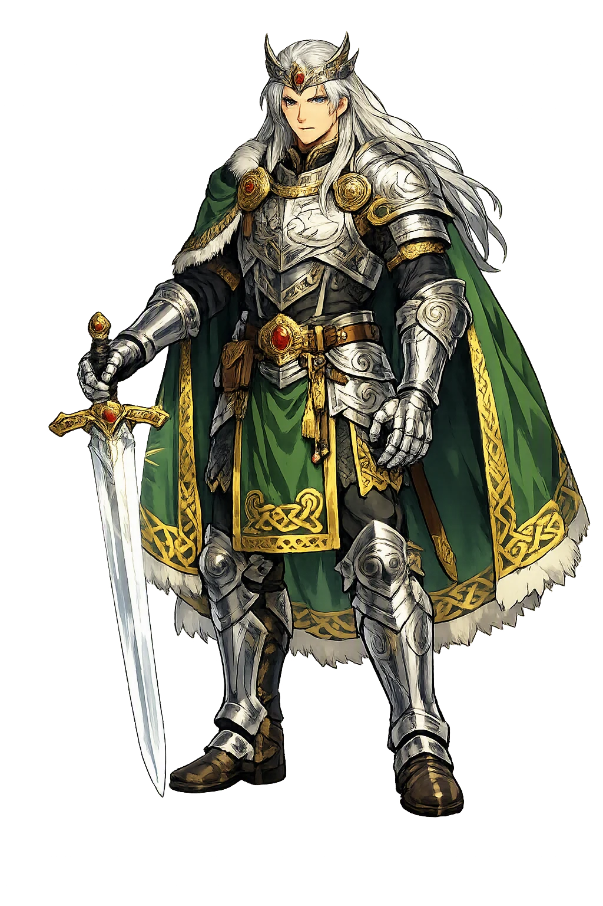
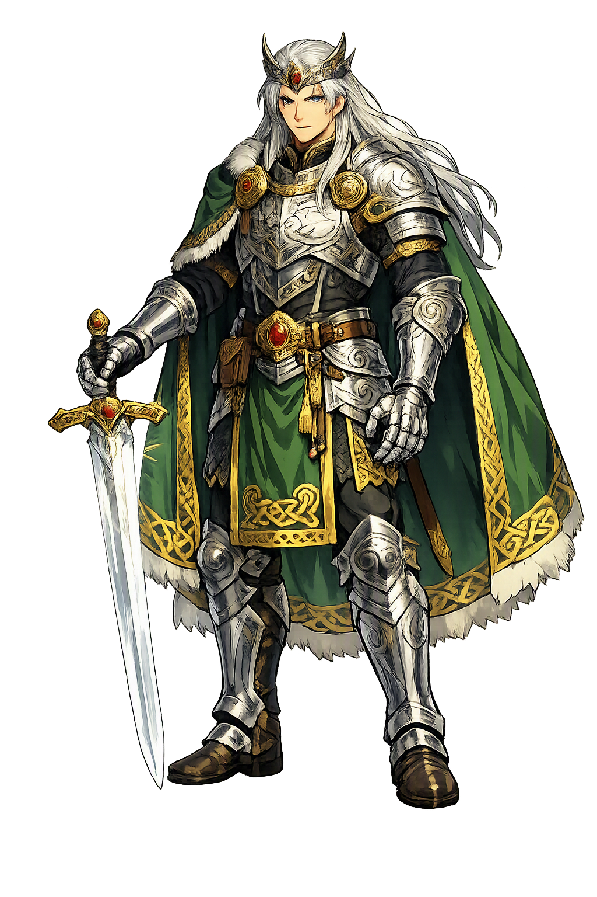

Unicode restoration and ASCII comparison
Nuada
The name survives in scholarly transliteration. Nuada is the standard Celtic romanisation, documented in academic sources — “Cloud-maker, hunter”. Because the spelling uses only Latin letters, the form is the same in both ASCII and Unicode.
No indigenous writing system is securely attested for individual celtic names. The form shown is a modern scholarly transliteration.
nuada
The plain nuada form is identical to the Unicode restoration. Because this name is already written in Latin letters, no diacritics, stress, or script information were lost — only capitalization differs.
Nuada
The Unicode restoration does not need to recover lost marks for Nuada. Its value is canonical spelling and consistent cataloguing, not the reconstruction of erased orthography. The domain is readable as-is to both DNS and humanity.
Nuada.com → nuada.com
The non-ASCII characters in Nuada are encoded while the ASCII remains visible. To the DNS, it is Punycode. To humanity, it is Nuada.
How Nuada is preserved in writing
No indigenous writing system is securely attested for individual celtic names. The form shown is a modern scholarly transliteration.
Contribute scholarly provenance →Owned, ideal, and ASCII forms of Nuada
Nuada
The full Unicode restoration. nuada.com is not in the PuniCodex collection — it is watched for release; if it drops, this temple upgrades to an owned flagship.
How Nuada was spoken
The Silver-Handed King of the Tuatha Dé Danann
Nuada Airgetlám is the first king of the Tuatha Dé Danann in Ireland — the ruler who lost his arm at the First Battle of Mag Tuired, lost his throne to the law that a blemished man cannot be king, and won both back through the physicians' craft: first the silver arm that named him, then the living arm that restored him. His sword from Findias was one of the Four Treasures of his people, and he died at the Second Battle of Mag Tuired at the hands of Balor of the Evil Eye.
Dian Cécht's silver arm, made with Credne the brazier, moved in every joint — and gave the king his name, Airgetlám.
One of the Four Treasures of the Tuatha Dé Danann; once it was drawn from its sheath, no one escaped it.
The plain of the two battles: against the Fir Bolg, where the arm was lost; against the Fomorians, where the king fell.
Irish kingship law held that no man with a blemish could rule; Nuada's wound cost him Tara, and his healing restored him.
Stories of Nuada
Nuada's story is the Irish tradition's great parable of kingship and the body: a ruler can be unmade by a single wound and remade by healing, and the law watches both. The record runs from the Lebor Gabála Érenn through the two battles of Mag Tuired, and his Welsh and Gaulish cognates carry the same silver-handed name across the Celtic world.
When the Tuatha Dé Danann came to Ireland, Nuada had been their king for seven years. They demanded the country from the Fir Bolg, and the two peoples met at Mag Tuired in Connacht. In the battle Nuada fought Sreng, champion of the Fir Bolg, and Sreng struck off his right arm at the shoulder — yet the Tuatha Dé Danann won the field, and the Fir Bolg king Eochaid mac Eirc was driven to his death. The victory that made the Tuatha Dé Danann masters of Ireland cost their king the wholeness the kingship required.
Because a blemished man could not hold the kingship, Nuada yielded the throne to Bres. The physician Dian Cécht, with Credne the brazier, made him a full arm of silver that moved in every joint — whence his byname Airgetlám, Silver-hand. But Dian Cécht's own son Miach went further: he set the severed arm to the stump and healed it 'joint to joint and vein to vein' in thrice nine days. Jealous that the son had outdone the father, Dian Cécht struck Miach dead; from the young healer's grave grew three hundred and sixty-five herbs, which his sister Airmed sorted by their virtues — and which Dian Cécht scattered, so that their full knowledge died with him. Healing, in this cycle, is never free of the wound of envy.
Bres mac Elatha, half Fomorian by blood, ruled badly: the warriors of Ireland were set to menial labour, hospitality failed, and the poet Cairbre mac Etaine composed against him what the tradition calls the first satire ever made in Ireland — and Bres's face broke out in blotches. The same law that had unseated Nuada now unseated Bres, for a blemished king could not stand; and with his arm made whole by Miach, Nuada took back the kingship and held it until the war with the Fomorians came. The symmetry is exact: one king falls by the body's wound, the other by the wound of the word.
At Tara, on the eve of the war, a stranger came to Nuada's hall claiming every skill at once — harpist, warrior, smith, poet, healer — and Nuada, testing Lugh and finding him unmatched, gave the young god his own seat, the champion's seat, to lead the counsel of war. The Second Battle of Mag Tuired was fought against the Fomorians, and there Nuada Airgetlám and Macha his wife fell together at the hands of Balor of the Evil Eye. The first king of the Tuatha Dé Danann in Ireland died in the victory that secured his people's rule; the sword of Findias passed into memory as the measure of a weapon that cannot be withstood.
Nuada is the king of the necessary surrender. The Irish law of the unblemished king looks cruel — a man maimed in his people's victory loses his throne — but the myth refuses both easy readings. It does not mock the law: Bres, who takes the throne, is judged by the same standard and falls to a blemish of the face raised by satire. And it does not abandon the wounded: the whole craft of the physician-gods bends itself to making Nuada whole, first in silver, then in flesh. What the cycle teaches is that sovereignty is not possession but fitness, and fitness can be lost and restored. The silver hand is the emblem of every function that has to be rebuilt after catastrophe: it moves in every joint, it does the work, and it is not the thing it replaces — until Miach's deeper healing shows that even that distinction can be overcome. The king who rules again is not the king who fell. He is the king who was remade.
Enter Extended Lore